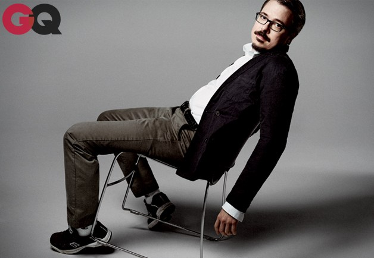
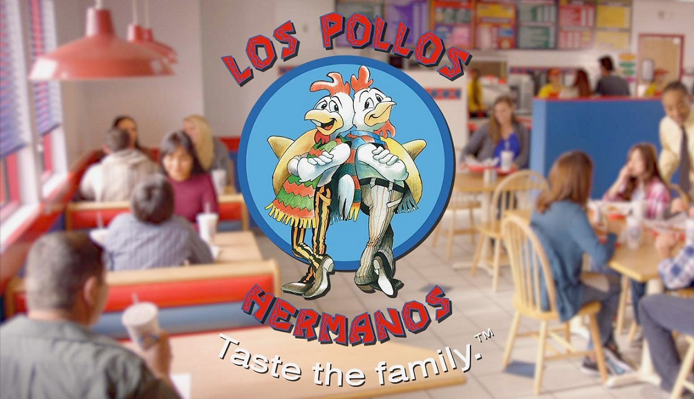

Who created Breaking Bad?
George Vincent Gilligan Jr. (born February 10, 1967) is an American writer, producer, and director. He is known for his
television work, specifically as creator, head writer, executive producer, and director of Breaking Bad and its spin-off
Better Call Saul.
About the show
Breaking Bad follows protagonist Walter White (Bryan Cranston), a chemistry teacher who lives in New Mexico with his
wife (Anna Gunn) and teenage son (RJ Mitte) who has cerebral palsy. White is diagnosed with Stage III cancer and
given a
prognosis of two years left to live. With a new sense of fearlessness based on his medical prognosis, and a desire
to
secure his family's financial security, White chooses to enter a dangerous world of drugs and crime and ascends to
power
in this world. The series explores how a fatal diagnosis such as White's releases a typical man from the daily
concerns
and constraints of normal society and follows his transformation from mild family man to a kingpin of the drug
trade.

Los pollos Hermanos
Los Pollos Hermanos was a fast-food restaurant chain that specialized in fried chicken operating across the
southwestern
United States. The name, pronounced [los ˈpo.ʝos eɾˈma.nos], is ungrammatical Spanish for "The Chicken
Brothers."
Founded by Gustavo Fring and Max Arciniega, the restaurant chain had fourteen locations throughout the
southwest and was
Gustavo Fring's major business concern. Los Pollos Hermanos was a subsidiary of Madrigal Electromotive, a
German
conglomerate with an ownership stake in the company. The restaurant also provided money-laundering and
logistics for
illegal activities.